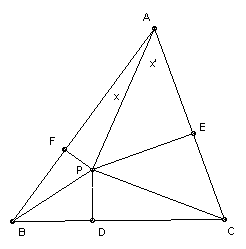

P is a point inside the triangle ABC. The feet of the perpendiculars to the sides are D, E, F. Find the point P which maximises PD.PE.PF/(PA.PB.PC). Which triangles give the largest maximum value?
Solution

Let n = PD.PE.PF/(PA.PB.PC). We have PF.PE/PA2 = sin x sin x' = 1/2 cos(x - x') - 1/2 cos(x + x') = 1/2 cos(x - x') - 1/2 cos A ≤ 1/2 - 1/2 cos A = sin2(A/2), with equality iff P lies on the bisector of angle A. Hence n ≤ sin(A/2) sin(B/2) sin(C/2) with equality iff P is the incenter.
But sin(A/2) sin(B/2) = 1/2 cos(A/2 - B/2) - 1/2 cos(A/2 + B/2) = 1/2 cos(A/2 - B/2) - 1/2 sin C/2. So sin(A/2) sin(B/2) sin(C/2) can only be maximal if A/2 = B/2. Hence it can only be maximal if A = B = C. So the unique maximum is if the triangle is equilateral.

© John Scholes
jscholes@kalva.demon.co.uk
14 Oct 2002